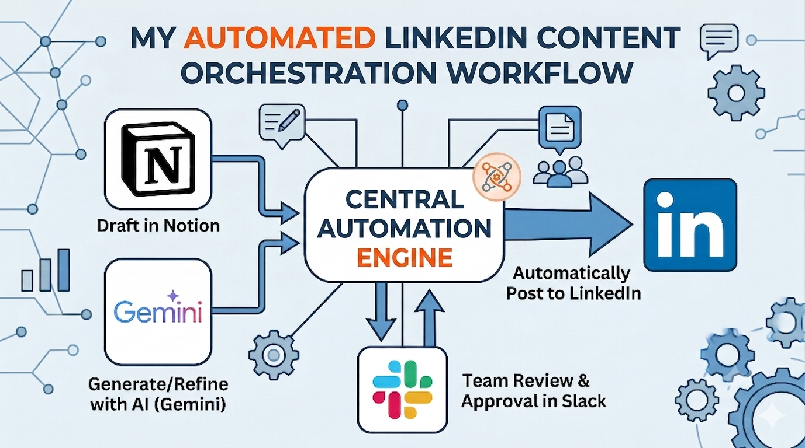

Welcome to
We build intelligent systems, automate workflows, and deliver cutting-edge digital products that push the boundary of what's possible.
I'm Talal Baloch — founder of Talal Labs, developer, and AI systems builder. Not everyone can point to the exact moment their direction became clear. I can. It was in 9th grade. A mentor sat down with me and showed me what web development actually was — not the polished surface that everyone sees, but the architecture underneath. The logic. The structure. The way a system thinks. Most people look at a website and see a page. That day, I started seeing the machine. That moment did not give me a skill. It gave me an obsession. For a long time, that obsession lived quietly — following the evolution of technology, watching how artificial intelligence was beginning to reshape every industry, every government, every system that humans had built. I was not just consuming information. I was developing a perspective. Building a mental model of where everything was heading.
Then came the moment I stopped watching and started building. That decision changed everything. Since then, every project I take on follows one non-negotiable principle: high-velocity iteration. I build. I stress-test. I identify every point of failure. I iterate. I do not treat technical obstacles as interruptions — I treat them as accelerated classrooms. Every system I have broken taught me exactly how to build the next one stronger. Every mistake became institutionalized knowledge. Nothing is wasted. Talal Labs exists because of one belief I cannot shake: the gap between what AI can actually do and what most companies and governments are doing with it is not a technical problem. It is an implementation problem. The technology exists. The will to deploy it correctly — and the people who know how — are far rarer. I am not here to talk about artificial intelligence. I am here to build the systems that make it operational, practical, and real — for the companies and governments that cannot afford to wait for someone else to figure it out first.

Have a project, idea, or question? I'm always open to new opportunities and collaborations.